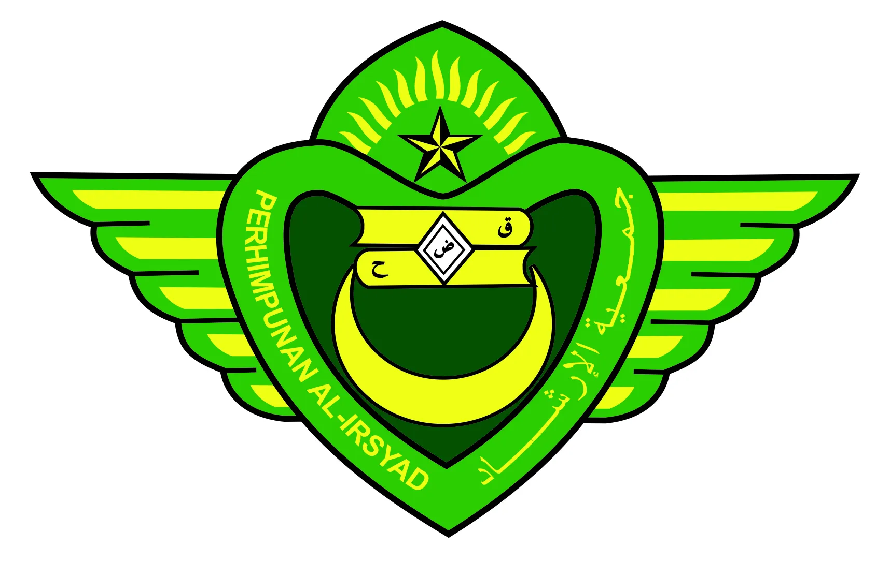

 |
MA Al-Irsyad Tengaran |
Setiap jurusan memiliki kurikulum yang dirancang untuk memberikan pengetahuan dan keterampilan yang sesuai dengan kebutuhan siswa. Kami juga menyediakan fasilitas pendukung untuk mendukung proses belajar mengajar di setiap jurusan.
| Jurusan | Jumlah Siswa |
|---|---|
| IPA | 50 |
| IPS | 45 |
| Bahasa | 40 |
| Keagamaan | 35 |